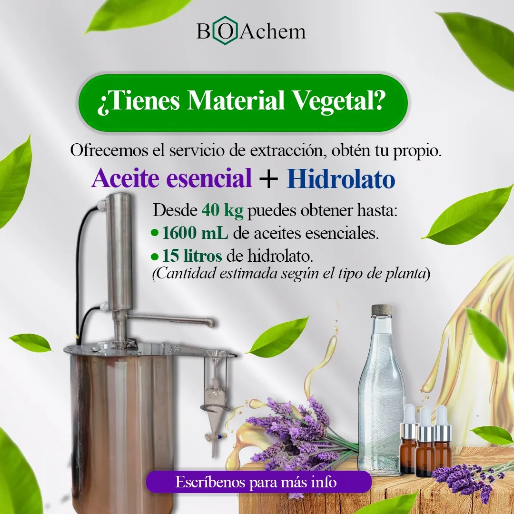
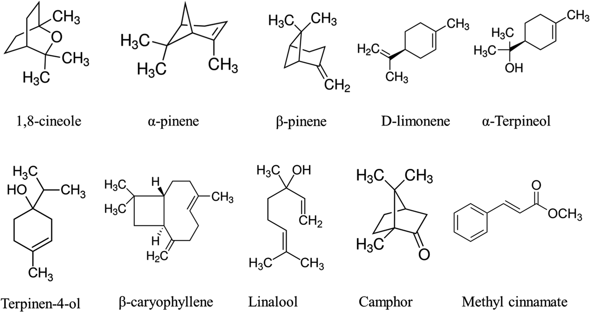
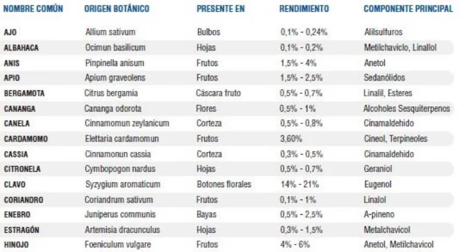
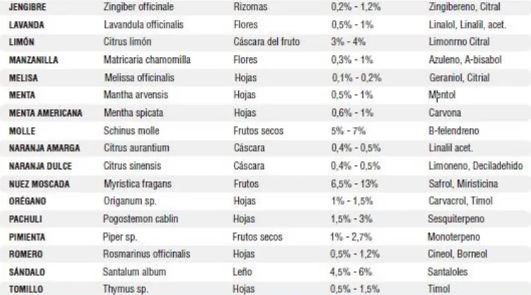
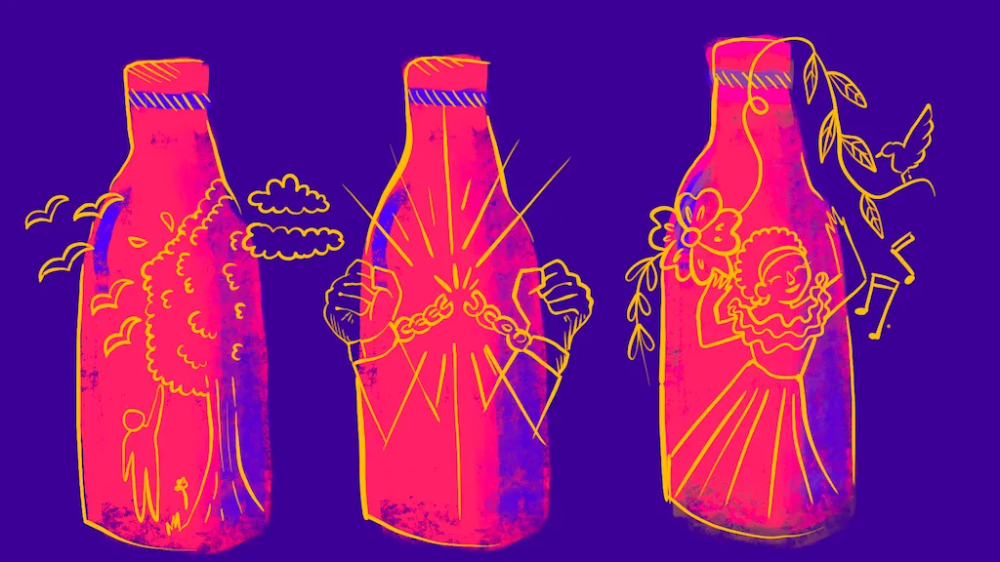

La hidrodestilación es un método para extraer aceites esenciales de plantas aromáticas. El material vegetal es técnicamente tratado para aumentar su área superficial dentro del destilador, el vapor de agua es generado e interactúa con el material vegetal, para así arrastar los compuesto volátiles.
A pesar que el agua no es un solvente orgánico, el diseño del proceso promueve el arrastre de las moléculas más volátiles del material vegetal hacia un condensador. Obteniendo dos fases: una fase acuosa conocida como hidrolato y una fase rica en compuestos orgánicos que por definición, es el aceite esencial de la planta.
En BOAchem ofrecemos el servicio de hidrodestilación: a partir de tu material vegetal obtenemos el aceite esencial y el hidrolato. Cuéntanos qué planta quieres procesar y en qué cantidad para darte una cotización.
Cotizar servicio de hidrodestilación
Los aceites esenciales, a pesar de lo que su nombre podría sugerir, no están compuestos por aceites como trigliceridos, ni los aceites vegetales de las plantas de los que provienen, el proceso de extracción solo permite la obtención de las moléculas más volátiles, en su mayoria relacionadas con el aroma e interacción ecológica de la planta con el medio ambiente. Las moléculas que conforman el aceite esencial de las plantas aromáticas son principalemente compuestos conocidos como "Terpenos", "Terpenoides", "Sesquiterpenos" y en menor proporción algunos aldehídos y ésteres de bajo peso molecular.




La fermentación es un proceso metabólico en el cual los microorganismos, como bacterias, levaduras u hongos, descomponen sustancias orgánicas para obtener energía. Este proceso es fundamental en la producción de diversos alimentos y bebidas, como pan, cerveza, vino, yogur, queso, y más.
En BOAchem ofrecemos el servicio de fermentación para la obtención de licores destilados a partir de frutas, granos o vegetales, como:
• Viche
• Aguardiente
• Vodka
• Licor de café